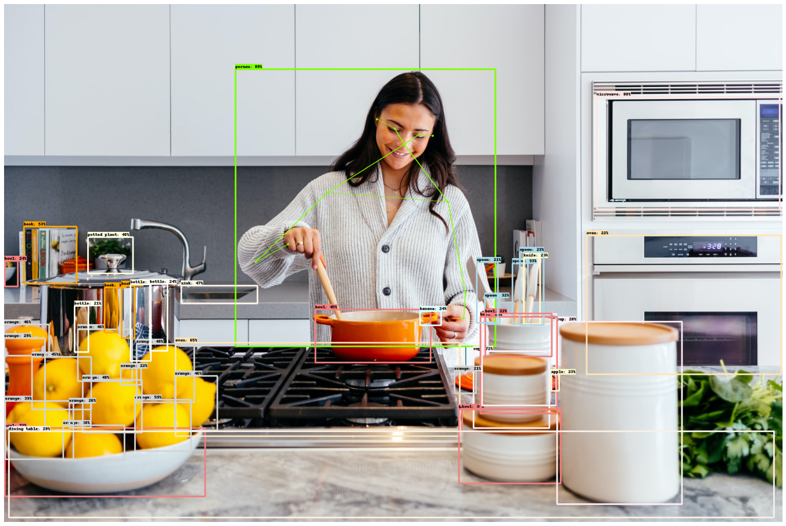

No file chosen, yet!

DL - CNN Tensorflow
Vision - Brain Tumor Classifier & Live Prediction in Browser.
In this project, I built an object detection model using 'CenterNet HourGlass104 Keypoints 512x512' which was pre-trained on COCO-2017 dataset containing 80 different object categories. This model also contained human pose keypoints which were also used during visualization of predictions.
There are many other pretrained models present on tensorflow-hub object detection and I used CenterNet because of it speed and accuracy rate, while in-case of live predictions in browser in used MobileNet / COCO-SSD which is light, less complex, faster inference speed but less accurate then CenterNet. (CenterNet Paper)
Other details like 80-categories, building process, performance are in the following sections.
Model Predictions
After loading and preprocessing the images, I used Tensorflow object detection API for predictions and visulization of boxes and keypoints
otherwise I would've to create custom functions to create bounding boxes and pose keypoints which would've taken alot of time.
Some of the predictions examples are:
Future experiments can be done to make object segmentation and to detect and read specfic objects like car license plates.
To view the source code, datasets and models, please visit my Github page.
Live Object Dectection on Photos.
It uses the COCO-SSD model pre-trained on 80-Categories which was developed by the TensorFlow.js team in 2018, where it is currently maintained on TensorFlow.js. In this project I'm using ml5 library to load and detect objects from images and p5.JS to create boxes and labels.
Live Object Detections using WebCam.
It uses the same model as above COCO-SSD, the difference is that is this section it take webcam frames as input to detect objects, which was also developed using ml5 and p5.JS libraries.
Please wait, it will take few seconds to load and open webcam
when you'll click the button.